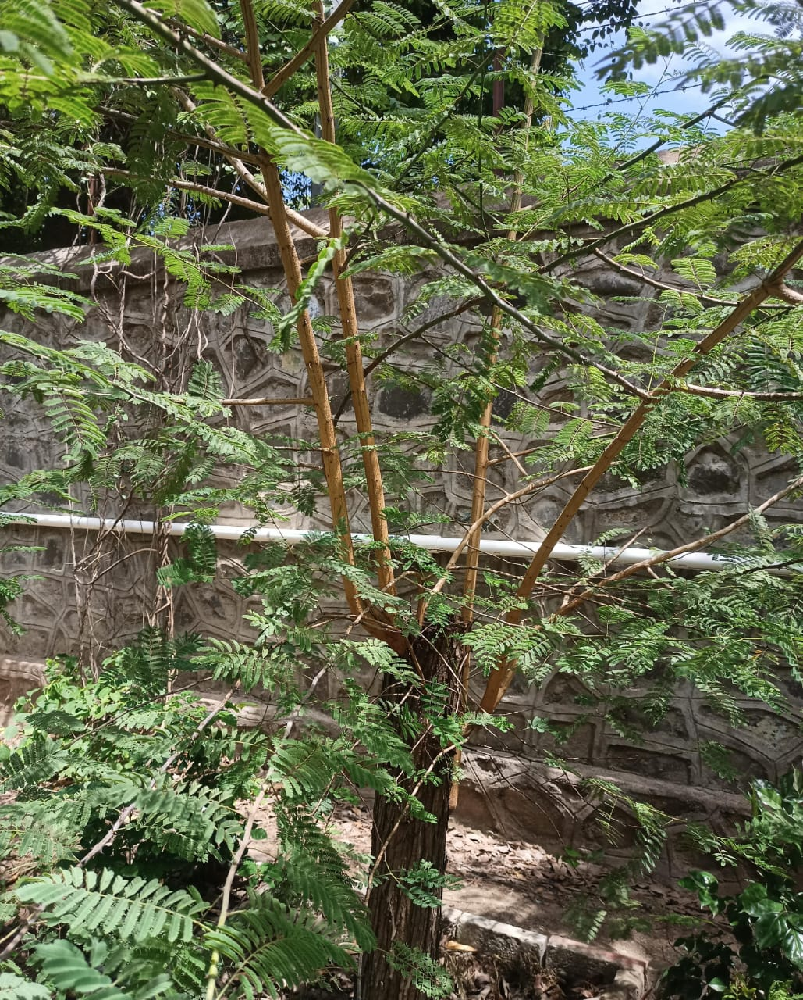

Plant Information
Botanical Name:
Senegalia catechu (L.f.)
Common Name:
Khair / Catechu
Family:
Fabaceae
Description
Khair is a medium-sized thorny tree commonly found in India.
It has compound leaves and small pale yellow flowers.
Medicinal Uses
- Traditionally used in herbal preparations for oral and digestive health.
- Traditionally used for gum problems and mouth ulcers.
- Used traditionally in preparations for minor skin irritation and inflammation.